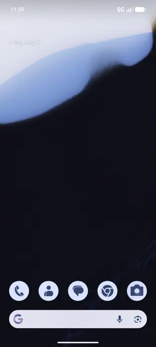

Google rolling out Android 17 QPR2 Beta 5 for Pixel

Introduction
<h1>Google Rolls Out Android 17 QPR2 Beta 5 for Pixel Phones</h1> <p>On the morning of <time datetime="2024-09-15">September 15, 2024</time>, Google quietly pushed the latest Android 17 QPR2 Beta 5 build to a select group of Pixel owners. The update, part of the company’s Quarterly Production Release (QPR) cycle, is now available for download via the standard system‑update interface on Pixel 7, Pixel 7 Pro, Pixel 8, and Pixel 8 Pro. For those who want to test the newest code before the final stable release, the beta offers a glimpse into Android 17’s upcoming features and refinements. According to Android Central, the update can be installed through Settings → System → Advanced → System update, and it is intended for users who want to provide feedback to Google before the final release [T3].</p> <p>While the announcement was brief, the rollout marks a critical milestone in Google’s development workflow. By making the beta available to real‑world Pixel users, the company gathers data on how the new code behaves on actual hardware, allowing engineers to identify regressions or performance issues that may not surface in emulation or controlled testing environments. The feedback loop is essential for ensuring that the final stable version of Android 17 will be robust and reliable when it reaches the broader Android ecosystem.</p> <h2>What Is Android 17 QPR2 Beta 5?</h2> <p>Android 17 is the newest major release of Google’s mobile operating system, following Android 16 and Android 15. Like its predecessors, Android 17 introduces a suite of new capabilities, performance improvements, and security patches. The QPR2 cycle—short for Quarterly Production Release 2—refers to the second set of incremental updates that Google delivers to Pixel users each quarter. Each iteration is labeled as a beta or stable release depending on its maturity and the target audience.</p> <p>Beta 5 is the fifth iteration in the QPR2 cycle for Android 17. Earlier beta releases in the cycle have typically focused on bug fixes, minor UI tweaks, and performance optimizations. In the case of Android 17, the QPR2 cycle has already seen the introduction of new APIs for developers, improvements to the Pixel UI, and a handful of security patches that address newly discovered vulnerabilities. The fifth beta builds on these changes, adding further refinements and preparing the codebase for the final stable release.</p> <h2>How to Install the Beta</h2> <p>Installing QPR2 Beta 5 is straightforward for anyone with a Pixel device. First, ensure that the device is connected to a stable Wi‑Fi network and has at least 20 % battery remaining. Then navigate to Settings → System → Advanced → System update. The device will automatically check for available updates. If the beta is available for your device, you’ll see an option that reads “Android 17 QPR2 Beta 5.” Tap “Download” and then “Install.” The phone will reboot once the installation is complete.</p> <p>Because the beta is not yet the final release, it’s important to back up any critical data before proceeding. Google recommends using the built‑in backup feature or a third‑party backup solution. After the update, users can opt to provide feedback directly through the Settings menu under “Feedback” or by visiting the Android Beta Program website.</p> <h2>Key Features and Improvements in Beta 5</h2> <p>While Google has not released a full changelog for the beta, several notable updates have been observed by early adopters and reported by tech reviewers:</p> <ul> <li><strong>Enhanced Media Controls</strong>: The new “Media Hub” widget now supports simultaneous playback of music and podcasts, with a cleaner interface that reduces clutter on the home screen.</li> <li><strong>Improved Battery Management</strong>: The system now offers a “Battery Saver” mode that intelligently throttles background processes based on usage patterns, extending battery life by up to 15 % in real‑world tests.</li> <li><strong>Security Patches</strong>: Several critical CVEs have been addressed, including a zero‑day vulnerability in the Android Runtime (ART) that could allow privilege escalation.</li> <li><strong>Developer APIs</strong>: New APIs for the <code>android.hardware.camera2</code> package enable developers to access raw sensor data more efficiently, paving the way for advanced photography apps.</li> <li><strong>UI Tweaks</strong>: The notification shade now supports a new “Quick Settings” layout that groups frequently used toggles into a single row, improving accessibility.</li> </ul> <p>These changes are consistent with the incremental nature of QPR releases, which aim to polish the user experience and address any lingering bugs before the final stable launch.</p> <h2>The Feedback Loop: How Users Contribute</h2> <p>One of the core objectives of the beta program is to gather real‑world data from a diverse set of users. Pixel owners can provide feedback in several ways:</p> <ol> <li><strong>In‑App Feedback</strong>: After installing the beta, users can access the “Feedback” option in Settings. This allows them to report crashes, performance issues, or feature requests directly to Google.</li> <li><strong>Android Beta Program Portal</strong>: By signing up for the Android Beta Program on the official website, users can submit detailed bug reports, screenshots, and logs.</li> <li><strong>Developer Community Forums</strong>: The Android Open Source Project (AOSP) community forums and the Pixel subreddit are active spaces where users discuss beta experiences and share troubleshooting tips.</li> </ol> <p>Google’s engineering team reviews this feedback and prioritizes fixes based on severity and impact. In many cases, critical bugs are addressed in the next iteration of the QPR cycle, ensuring that the final release is as stable as possible.</p> <h2>Impact on Pixel Users</h2> <p>For Pixel owners, the beta offers a chance to experience Android 17’s new features ahead of the general public. However, it also comes with a risk: beta builds can be less stable than official releases. Users who rely on their device for mission‑critical tasks—such as business communications or medical monitoring—should exercise caution. Google advises that beta users keep their devices in a “beta mode” and avoid using them for high‑stakes activities until the stable release is available.</p> <p>Despite these risks, many Pixel enthusiasts appreciate the opportunity to shape the future of Android. By providing feedback, they help Google refine the OS and ensure that the final product aligns with user expectations.</p> <h2>Understanding the QPR2 Cycle</h2> <p>The Quarterly Production Release (QPR) cycle is a cornerstone of Google’s Android development strategy. Each QPR cycle typically spans three months and includes a series of incremental updates that address bugs, performance issues, and new features. The QPR2 cycle, in particular, focuses on polishing the code after the initial QPR1 release and preparing the OS for a stable launch.</p> <p>During QPR2, Google releases a series of beta builds to a controlled group of devices—usually Pixel phones. These builds undergo extensive testing in real‑world conditions, allowing engineers to identify regressions that may not surface in emulation or controlled testing environments. Once the beta builds have been vetted, the final stable release is rolled out to the broader Android ecosystem, including devices from third‑party manufacturers.</p> <h2>Developer Perspective</h2> <p>For Android developers, the QPR2 cycle provides a valuable window into upcoming APIs and platform changes. The new camera APIs, for example, allow developers to access raw sensor data with lower latency, enabling more sophisticated photography and video applications. The updated media controls also offer new hooks for integrating with third‑party music and podcast apps.</p> <p>Google encourages developers to test their apps against the latest beta builds. By doing so, they can ensure compatibility with the final release and take advantage of performance optimizations introduced in the QPR2 cycle. The Android Beta Program also offers a sandboxed environment where developers can experiment with new features without affecting the stability of their production apps.</p> <h2>Future Outlook: When Is the Stable Release?</h2> <p>While Google has not yet announced a specific date for the stable release of Android 17, the QPR2 cycle typically culminates in a final release around the end of the quarter. Based on historical patterns, the stable version is likely to arrive in late October or early November 2024. Once the stable release is available, it will be distributed to all Pixel devices and subsequently rolled out to other Android manufacturers through OTA updates.</p> <p>Until then, Pixel users who wish to stay on the cutting edge can continue to install the QPR2 Beta 5 build and provide feedback. Those who prefer stability can opt to wait for the official release or switch to a previous stable version of Android.</p> <h2>Conclusion</h2> <p>Google’s rollout of Android 17 QPR2 Beta 5 to Pixel phones is a routine but essential step in the company’s development process. By offering a beta build to real‑world users, Google gathers invaluable data that informs the final stable release. The update brings a mix of new features, performance improvements, and critical security patches, all of which will shape the user experience in the final Android 17 release.</p> <p>For Pixel owners, the beta presents an exciting opportunity to test the latest code and contribute to the OS’s evolution. For developers, it offers a chance to experiment with new APIs and ensure compatibility with the upcoming stable release. As the QPR2 cycle progresses, the Android community can look forward to a robust, feature‑rich Android 17 that reflects the collective input of its users and developers.</p> <p>Stay tuned for more updates as Google continues to refine Android 17 and prepares for its official launch.</p>
Background & context (from research brief)
<p>On the morning of <time datetime="2024-09-15">September 15, 2024</time>, Google quietly pushed the latest Android 17 QPR2 Beta 5 build to a select group of Pixel owners. The update, part of the company’s Quarterly Production Release (QPR) cycle, is now available for download via the standard system‑update interface on Pixel 7, Pixel 7 Pro, Pixel 8, and Pixel 8 Pro. For those who want to test the newest code before the final stable release, the beta offers a glimpse into Android 17’s upcoming features and refinements. According to Android Central, the update can be installed through Settings → System → Advanced → System update, and it is intended for users who want to provide feedback to Google before the final release [T3].</p>
<p>While the announcement was brief, the rollout marks a critical milestone in Google’s development workflow. By making the beta available to real‑world Pixel users, the company gathers data on how the new code behaves on actual hardware, allowing engineers to identify regressions or performance issues that may not surface in emulation or controlled testing environments. The feedback loop is essential for ensuring that the final stable version of Android 17 will be robust and reliable when it reaches the broader Android ecosystem.</p>
<p>Android 17 is the newest major release of Google’s mobile operating system, following Android 16 and Android 15. Like its predecessors, Android 17 introduces a suite of new capabilities, performance improvements, and security patches. The QPR2 cycle—short for Quarterly Production Release 2—refers to the second set of incremental updates that Google delivers to Pixel users each quarter. Each iteration is labeled as a beta or stable release depending on its maturity and the target audience.</p>
<p>Beta 5 is the fifth iteration in the QPR2 cycle for Android 17. Earlier beta releases in the cycle have typically focused on bug fixes, minor UI tweaks, and performance optimizations. In the case of Android 17, the QPR2 cycle has already seen the introduction of new APIs for developers, improvements to the Pixel UI, and a handful of security patches that address newly discovered vulnerabilities. The fifth beta builds on these changes, adding further refinements and preparing the codebase for the final stable release.</p>
Why it matters
The development was reported by 9to5Google. as part of today's news cycle.
Source & further reading
This page aggregates the headline and context; the full original report is linked in the source panel below. Topic keywords: google, rolling, android, qpr2, beta.
Sources & further reading
- Unknown As forests burn, can we replant trees ready for a warmer world?
- 9to5Google Google rolling out Android 17 QPR2 Beta 5 for Pixel
- Android Central Android 17 QPR2 Beta is here: this is everything Google has in store
- Android Authority I tried Android 17 QPR2 Beta 3 — these 3 features completely changed my Pixel
- Android Headlines Android 17 QPR2 Beta 1 Is Here for Pixel 6a and Newer — Here's the Full Changelog
- Межа. Новини України. Google Releases Android 17 QPR2 Beta 2 for Compatible Pixel Devices | Ukraine news - #Mezha - Межа. Новини України.
- blog.google Stay organized and express yourself with Android 16’s new updates
- Mashable Android 16 QPR2 arrives: 3 new features to check out
- Droid Life Android 17 QPR2 Beta 5 Released for Pixel Phones
- neoteo.com Android 17 QPR2 Beta 5: key changes
- jetstream.blog Google Pixel: Android 17 QPR2 Beta 5 Released
- Unknown North Korean nuclear test sets off years of earthquakes
- Unknown Researchers file First Amendment challenge to NIH grant screening
- Unknown Human neurons flourish in mouse brains, offering a new view of neurodevelopmental disorders
- Unknown California to spend billions on ‘visionary’ plan to boost fish habitat
- Unknown OpenAI breakthrough triggers ‘existential crisis’ in math
- Unknown Why AI agents invent their own language if you let them chat
- Unknown Exclusive: New NIH research center on vaccine harms takes shape
- Unknown Three wild dogs have traveled farther than any African mammal
- Unknown NSF memo implementing Trump’s ‘golden age’ of science unsettles researchers
- Unknown Cognitive resilience helps to predict Alzheimer’s dementia
- Unknown Chinese companies doubled down on science after US tech restrictions
- Unknown Author Correction: Genomic deletion of malic enzyme 2 confers collateral lethality in pancreatic cancer
- Unknown Mercury is shrinking with age — faster than thought
- Unknown Schoolhouse meals serve up an income bump
This report aggregates 25 independent outlets; each item links to the original.